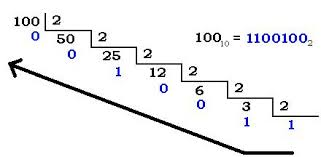

Capítulo 2
Conceptos básicos de Matlab - Octave
Santiago Higuera de Frutos
2014

This work is licensed under a Creative Commons Attribution 4.0 International License.
BIT
- La unidad de información elemental en un sistema informático es el bit
- Puede tomar dos valores: cero o uno
- Físicamente: paso de corriente o no, imantación o no, etc

Sistemas de numeración
Sistema binario


Sistema octal
Sistema hexadecimal
Gracias por su atención
Santiago Higuera de Frutos
@santiagohigueraEl código fuente de la presentación se puede consultar en Github: